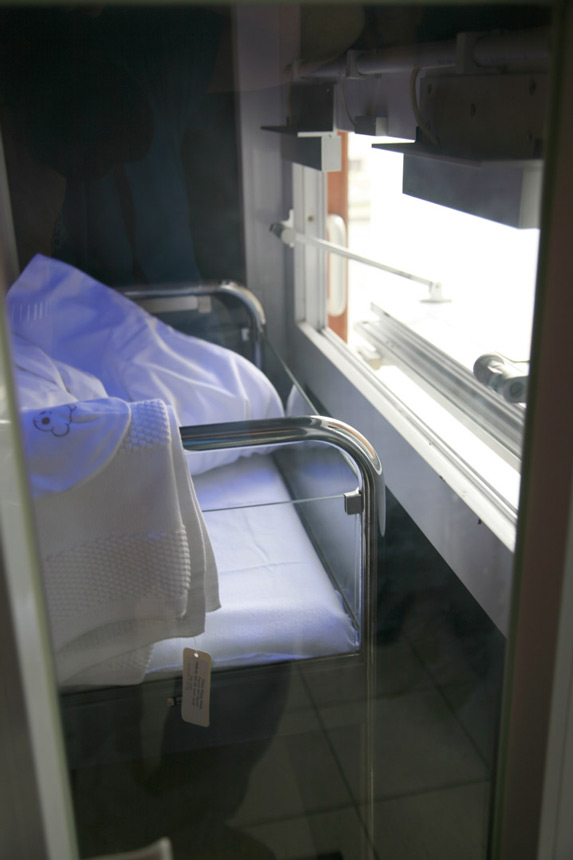

If one finds a baby in the foundling hatch, the first medical checkup is done by a doctor.
Afterwards, it is taken care of by someone from the foundling team for about 24 hours.
The Mayor of Antwerp is informed. In fact, he becomes guardian of all children found in the territory.
He entrusts the baby to the CKG's urban child care.
After a few weeks, and if the mom does not make contact, adoption services are notified that they may designate a family on their list of screened families. Within about a month, that family takes in the baby until they can finally complete the adoption process.
During the first 6 months, a birth mother has the right to regret her decision and interrupt the adoption process.
